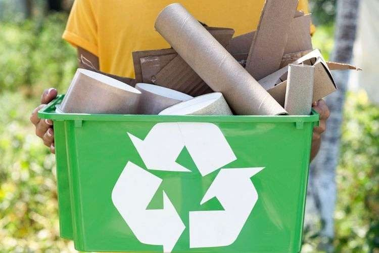

Pemanfaatan limbah menjadi karya seni dan produk bernilai guna merupakan langkah kreatif dalam menjaga lingkungan sekaligus meningkatkan nilai ekonomi dari barang bekas.
Baca Kesimpulan
Kelompok kami memilih untuk membuat kerajinan vas bunga gantung dari tempurung kelapa karena tempurung kelapa merupakan limbah organik yang masih dapat dimanfaatkan menjadi produk kerajinan bernilai jual tinggi dan memiliki nilai estetika.
Selain membantu mengurangi limbah, pembuatan vas bunga gantung ini juga melatih kreativitas, inovasi, dan kepedulian terhadap lingkungan. Dengan desain yang menarik, produk ini dapat digunakan sebagai hiasan rumah sekaligus memiliki peluang usaha yang menjanjikan.